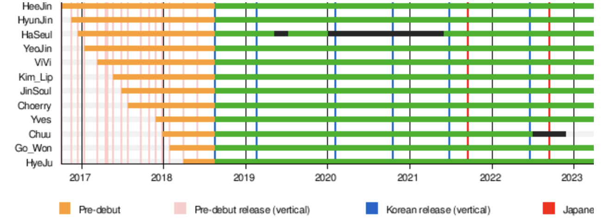

Loona (stylized in all caps or as LOOΠΔ; Korean: 이달
의 소녀; RR: Idarui Sonyeo; Japanese: 今月の少女, romanized:
Kongetsu no Shōjo, lit. 'Girl of the Month') is a South Korean girl
group formerly under Blockberry Creative. The group is composed of eleven members:
Heejin Hyunjin, Haseul, Vivi, Yeojin, Kim Lip, Jinsoul, Choerry, Yves,Chuu, Go
Won, and HyeJu (formerly Olivia Hye). Originally a twelve-member group, Chuu was removed from the line-up on November 25, 2022, due to a
contract dispute. Starting in October 2016, as part of a pre-debut project, each member was introduced to the public through a
solo promotional single over the following 18 months in a periodic fashion. The group debuted as a full ensemble on August 19, 2018,
with the extended play (EP) [+ +] supported by the lead single "Favorite" and the title track "Hi High".
On November 28, 2022, JTBC reported that all of the remaining members, excluding Hyunjin and Vivi, had filed for provisional injunction to suspend their contracts with Blockberry Creative.
On January 13, 2023, HeeJin, Kim Lip, JinSoul, and Choerry were granted preliminary injunctions, and they subsequently signed with Modhaus on March 17.
On May 9, HyunJin and ViVi were granted preliminary injunctions,and both members signed with CTDENM two days later.
On June 16, Seoul Economic Daily reported that the remaining members had won the lawsuit against the label, terminating their contracts.
On July 5, it was reported that YeoJin, Go Won and HyeJu had signed with CTDENM.[12] On July 6, Yves revealed she would continue as a soloist.
Loona's English name is derived from the Hangul letters ㅇㄷㅇㅅㄴ, each an initial consonant in the syllabic blocks that make 이달의 소녀 (Idarui Sonyeo). When rearranged to ㄴㅇㅇㄷㅅ, it resembles LOONA in the Latin alphabet.
2016-2018: Pre-debut sub-units and Mix Nine
On October 2, 2016, Blockberry Creative announced through Naver that they would be debuting their first girl group through an 18-month-long pre-debut project.
Jaden Jeong served as the group's creative director until August 2019, when he parted ways because of creative differences with the company.
Between October 2016 and January 2017, four members (HeeJin, HyunJin, HaSeul, and YeoJin) were revealed. Each member released a single album, typically consisting of a solo track and another track performed with other revealed members, under the group's Korean name Idarui Sonyeo (Korean: 이달의 소녀; lit. Girl of the Month).
In March 2017, the group's first sub-unit, Loona 1/3, was introduced, consisting of previously revealed members HeeJin, HyunJin, HaSeul, and a new member, ViVi.
Loona 1/3 released the extended play Love & Live and an accompanying single of the same name on March 13, 2017,with a television promotion on SBS's Inkigayo.
On April 27, they released a repackaged edition of the extended play, titled Love & Evil, accompanied by the single "Sonatine".
Love & Live and its reissued edition reached number 10 and 24, respectively, on South Korea's Gaon Album Chart.
Between April 2017 and July 2017, members ViVi, Kim Lip, JinSoul, and Choerry released their single albums, continuing the same Girl of the Month pattern.
In September 2017, three members, HeeJin, HyunJin, and HaSeul, auditioned for JTBC's reality show Mix Nine; HeeJin and HyunJin passed the audition stage making it onto the show,
where HyunJin placed Top 18 and HeeJin placed fourth in the finale.
The group's second sub-unit, Loona Odd Eye Circle, consisting of JinSoul, Kim Lip, and Choerry, released the extended play Mix and Match and its single "Girl Front" on September 21, 2017, and began promotions on Mnet's M Countdown.
The English version of their song "Loonatic" was released on October 23.
On October 31, they released a repackaged edition of the extended play, titled Mix & Match, with three new songs including the single "Sweet Crazy Love".
Mix & Match and the repackaged edition peaked at number 16 and 7, respectively, on the Gaon Album Chart.
Between November 2017 and January 2018, they released the solo single albums for new members Yves, Chuu, and Go Won, continuing the monthly pattern along with the digital single "The Carol 2.0" sung by Yves, Vivi, and Choerry.
In March 2018, they released the solo single album for the final member, HyeJu.
On May 30, 2018, the group's third sub-unit, Loona yyxy, consisting of Yves, Chuu, Go Won, and HyeJu, made their debut with the extended play Beauty & the Beat
The single "love4eva" featuring Canadian musician Grimes was released the same day with an accompanying music video.
he extended play reached number 4 on the Gaon Album Chart.
On August 7, 2018, Loona released a pre-debut digital single titled "Favorite", the group's first song to feature all twelve members,
accompanied by a music video focusing on the group's choreography. The pre-debut single was later revealed to be the lead single of Loona's debut EP [+ +].
2018-2019: Offical Korean Debut with [+ +] and [X X]
On August 20, Loona officially debuted as a full assemble with the release of the extended-play [+ +] (read as plus plus).
The album included "Favorite" as the lead single while "Hi High" served as its title track.[39] It debuted at number 2 on South Korea's Gaon Album Chart and was the second best-selling debut album by a girl group in 2018.
[+ +] was repackaged as [X X] (read as multiply multiply) on February 19, 2019, with six additional tracks, including a new single, "Butterfly".
On August 17, 2019, Loona made their first appearance in the United States, performing at KCON 2019 in Los Angeles.
On December 13, 2019, Loona released a single called "365" as an appreciation song for their fans.
2020-2021: [#], [12:00], [&], japanese debut, and chuu's injunction
On January 7, 2020, Blockberry Creative announced that HaSeul would not participate in the promotion for Loona's next album because of mental health concerns. She was said to be diagnosed with "intermittent anxiety symptoms" and would be taking time to focus on her health.
On February 5, 2020, Loona released their second EP titled [#] (read as hash), along with the title track "So What".
Although HaSeul did not appear in the title track, her vocals are featured on three other songs on the album, including "365". Once peaked at number 1 on the daily Gaon Retail Album Chart,
the EP then debuted at number 2 on the weekly Gaon Album Chart. On March 12, 2020, Loona won their first music show trophy with "So What" on Mnet's M Countdown.
On October 19, 2020, Loona released their third EP titled [12:00] (read as midnight),
accompanied by its first single "Why Not?". HaSeul was again not involved in the album, out of her own decision to focus on the recovery of her health.
The EP then became their first album to enter the Billboard 200, debuting at number 112.
On November 18, Loona released the music video for "Star", another song on [12:00].[51] Peaking at number 40, "Star" is Loona's first entry on the Billboard Mainstream Top 40, making them the second K-pop girl group to enter the chart.
n June 1, 2021, Loona announced that they would be having a comeback on June 28, with their fourth EP, [&] (read as and).
The following day, on June 2, a teaser was posted to Loona's official social media accounts showing twelve sets of eyes, confirming the return of member HaSeul who had been on hiatus since early 2020.
On June 12, group members YeoJin, Kim Lip, Choerry, and Go Won released the song "Yum-Yum" as a collaboration with Cocomong.
On September 8, they released another collaboration song named "Yummy-Yummy".
On June 27, 2021, Loona announced at the end of their special clip that they are making their Japanese debut on September 15 under Universal Music Japan sublabel EMI Records.
On August 27, it was announced that Loona will release the double A-side single, "Hula Hoop / Star Seed" on September 15, with a physical CD release on October 20.
In December, Chuu filed an injunction to suspend her exclusive contract with Blockberry Creative.
2022: queendom 2, flip that, and chuu's departure from the group
On February 11 and 12, 2022, Loonaverse: From was held at Jangchung Arena. However, Chuu was absent for health reasons.
On February 21, Mnet announced that Loona would participate in Queendom 2.
On February 28, it was announced that Loona would not be participating in the recording for the first round held on same day as HaSeul, YeoJin, and ViVi were diagnosed with COVID-19 few days prior to the recording.
On March 29, it was reported that Chuu had been granted a partial injunction following her December 2021 application. On June 2, Loona finished as runner-up in the live finale of the show.
The following day, Loona announced that they would be releasing their special summer EP, Flip That, on June 20.
On November 25, Blockberry Creative announced that Chuu had been removed from the group, citing an "abuse of power".
It had previously been reported in March that she had won a partial injunction, filed in December 2021.
Three days later, JTBC Entertainment News reported that all of the members except for ViVi and HyunJin had subsequently filed an application for a provisional injunction to suspend their exclusive contracts with Blockberry Creative. However, when the JTBC Entertainment News team asked Blockberry Creative for confirmation, they denied the statement.
On December 12, Blockberry Creative released a teaser image announcing Loona's comeback with their sixth EP titled [0] on January 3, 2023.
However, in light of the mistreatment of the members, fans organized a boycott of the comeback
and therefore on December 22, Blockberry Creative announced the comeback's indefinite postponement.
2023-present: Remaining members' departure from Blockberry Creative
On January 13, 2023, it was reported that due to the terms of their contracts being identical to Chuu's, members HeeJin, Kim Lip, JinSoul and Choerry had been granted preliminary injunctions, but that amendments to the contracts of HaSeul, YeoJin, Yves, Go Won, and HyeJu made in 2021 resulted in the court denying their requested injunctions.
The next day, Blockberry Creative announced that they were preparing to make a statement on Loona's future activities.
On February 1, Star News reported that Blockberry Creative had filed a petition with the Korean Entertainment Management Association to ban Chuu from all entertainment activities within South Korea, and that they plan to do the same for the four members who won the recent lawsuit.
On February 3, it was reported that HyunJin and ViVi would be filing to suspend their contracts with Blockberry Creative.
On March 17, members HeeJin, Kim Lip, JinSoul, and Choerry signed exclusive contracts with Modhaus.
On March 31, in an interview with Modhaus CEO, former Blockberry Creative creative director, Jaden Jeong, revealed that HeeJin, Kim Lip, JinSoul, and Choerry (Odd Eye Circle +) were already recording music under the new label.
On May 9, it was reported that members HyunJin and ViVi had been granted preliminary injunctions and part ways with Blockberry Creative,[7] two days later, both members signed with CTDENM.
On June 16, it was announced that the remaining members, namely HaSeul, YeoJin, Yves, HyeJu, and Go Won, had terminated their contracts with Blockberry Creative after winning their lawsuit against the agency.
On June 21, it was announced that HaSeul had signed with Modhaus.
On June 24, Blockberry announced that they plan to take legal action against the members.
On July 5, it was reported that members YeoJin, Go Won and HyeJu had signed exclusive contracts with CTDENM.
On July 12, sub-unit Odd Eye Circle released an EP Version Up, under Modhaus, with Kim Lip stating during the EP's showcase that "[Loona] is not a disbanded group however since [the members] cannot use the [group] name freely, we are leaving the possibility of activities as a full group opened".
On September 15, HyunJin, YeoJin, ViVi, Go Won and HyeJu re-debuted as Loossemble under CTDENM with the extended play of the same name.
ambassadorship
In May 2021, Loona was named the new ambassadors of Korean culture abroad. South Korea's Ministry of Culture, Sports and Tourism announced the ambassadorship on May 10, in celebration of the ministry's affiliate Korean Culture And Information Service's (KOCIS) 50th anniversary. The group was selected to promote Hallyu and Korean culture overseas with this new appointment.
Timeline
Sub-Units
Extended plays
Tours
Concerts
Online Concerts
Special Concerts